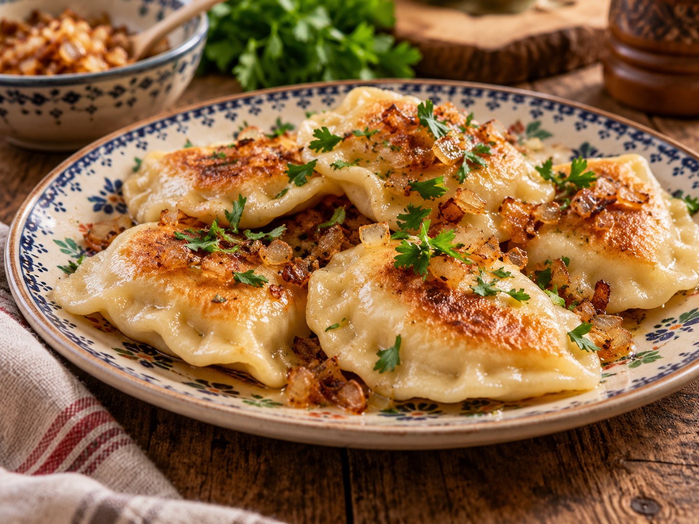
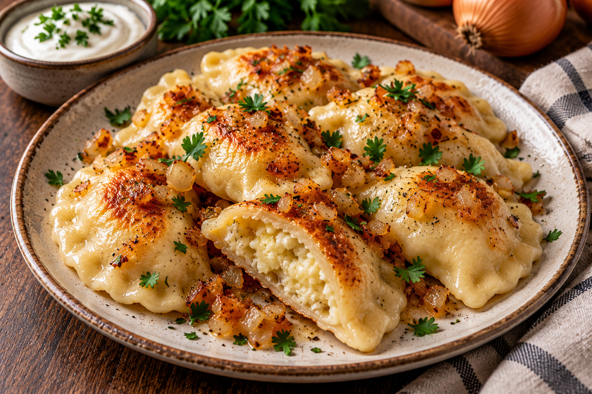

The Original Pierogi NFT: $33,000

Just like babcia made. With a few extra zeros.
Golden edges. Soft dough. A price that would make your grandmother put down her rolling pin. Welcome to our little corner of the blockchain, where Polish comfort food gets the luxury treatment. Start with our signature pierogi: all the charm of a homemade dinner, with absolutely none of the dinner. Sour cream sold separately. Actually, not sold at all.
Collect the Pierogi What's Cooking?For Collectors with Expensive Taste

The Pierogi Reserve: $6.6 million. For when one digital helping simply won't do. A second helping of Polish comfort food, priced like the family recipe comes with a castle.

The Million-Dollar Bigos: $1 million. A hearty Polish classic with a very untraditional price tag. Slow-cooked character, rich detail, and zero dishes to wash.
Still hungry? These are digital collectibles, so we'd recommend actual pierogi for that. Babcia would, too.